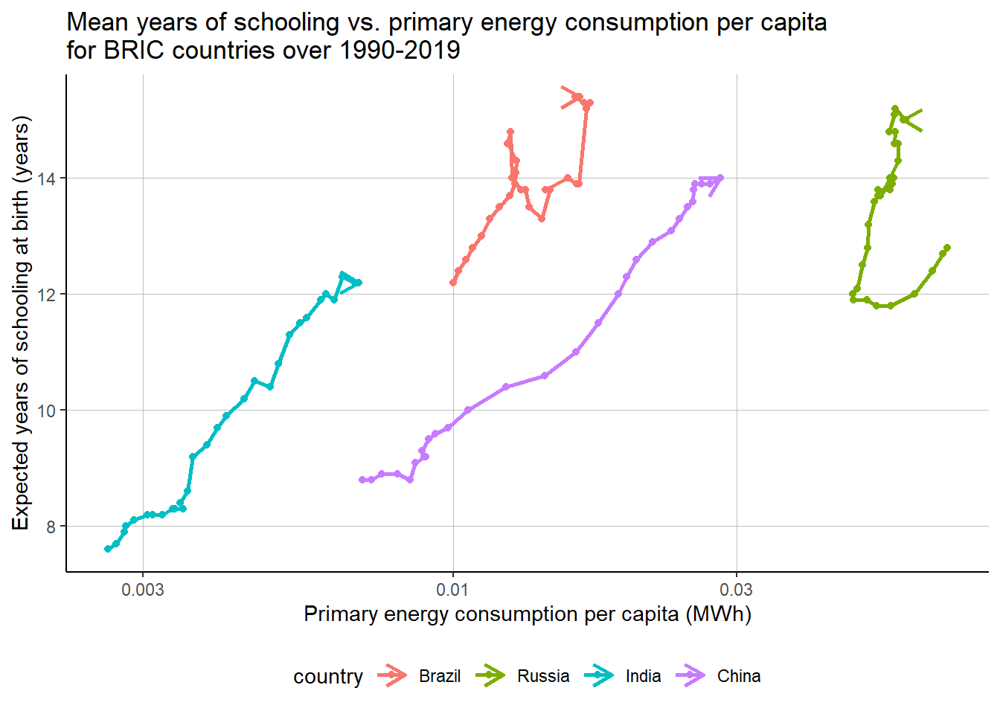

Chapter 6 Results Antonin’s part
6.1 How is the increase in energy consumption boosting the education system in order to cope with the industrial ”boom” generated by rapid economic growth?


## 169 codes from your data successfully matched countries in the map
## 0 codes from your data failed to match with a country code in the map
## 74 codes from the map weren't represented in your data